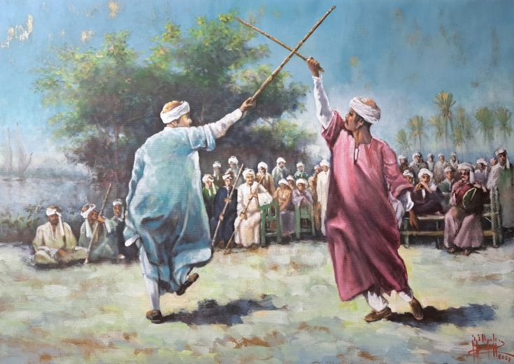

Egypt is one of the oldest civilizations in the world,
with a rich cultural heritage that extends through thousands
of years. From the time of the ancient Egyptians until today,
Egyptian customs, traditions, and folklore have reflected the
identity, creativity, and spirit of its people. Folklore represents
the stories, music, dances, celebrations, clothing, and values that
are passed from one generation to another. It shows how Egyptians preserved
their history while creating unique traditions in every era.
Ancient Egyptian Customs and Traditions
The ancient Egyptians highly valued family life
and social order. Respect for parents and elders was
an important part of daily life, and family bonds were
considered the foundation of society. Marriage was celebrated
with joy and special ceremonies, while hospitality and kindness
were admired qualities.
They were also known for their concern with cleanliness and beauty.
People used oils, perfumes, and fine linen clothes. Festivals and religious
celebrations were common, especially those connected with agriculture,
the Nile flood, and the gods.
The ancient Egyptians believed strongly in
life after death, so they honored the dead by building tombs,
temples, and preparing burial rituals. This belief gave the world great
monuments such as the pyramids and temples.
Ancient Egyptian Folklore
Folklore during ancient Egyptian times included myths,
legends, music, symbols, and celebrations.
One of the most famous legends was the story of Osiris,
Isis, and Horus, which represented the struggle between good
and evil, death and rebirth.
Music and dance were important parts of life.
Instruments such as the harp, flute, and drum were used
in festivals, weddings, and religious ceremonies.
The ancient Egyptians also used symbols that became
famous throughout history, such as:
•The Eye of Horus (protection)
•he Scarab (luck and renewal)
•The Lotus Flower (purity and rebirth)
Wisdom literature and moral teachings were common,
written on papyrus and temple walls to guide people
in their daily lives.
Egyptian Folklore in Different Governorates
Modern Egypt is rich in regional folklore, and each governorate has its own unique traditions.
Upper Egypt (Luxor, Aswan, Qena, Sohag):
stick dance (Tahtib), traditional galabeya clothing,
folk songs, storytelling with the rababa.

Delta Region (Mansoura, Tanta, Kafr El Sheikh):
harvest songs, rural weddings, embroidery, religious festivals.

Canal Cities and Sinai:
Bedouin poetry, embroidered Sinai dresses,
camel races, Simsimiyya music in Port Said.

Alexandria and Coastal Areas:
fishermen’s songs, Mediterranean customs and foods.

Cairo and Giza
Tanoura dance, Ramadan lanterns,
old popular neighborhoods, storytellers.

Egyptian folklore, whether ancient or modern,
reflects the strength and beauty of Egyptian identity.
It connects the present with the past and shows how traditions
can survive for thousands of years. Egypt remains a living example
of a civilization that respects its roots while continuing to inspire
the world.